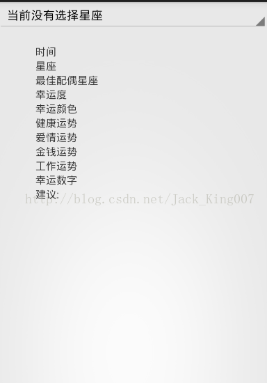

练手小项目（2）生活小助手星座运势查询
上一篇内容
今天星期一，趁着中午的休息时间把 第二个写出来 星座运势，最近看看极客学院 用聚合数据做了天气预报的视频教程，不好评价他，看他在后面的代码变更那么大，我就知道，后面肯定做不下去，于是，就改代码了，代码变更那么大，有几个人会去理解，还不如我自己写................
先看布局
点击去就是一个spinner 用几个textview显示查询内容 布局有点丑，主要是给别人做功能，UI我就不考虑

关于UI 我还是要贴下代码。如果你有想法就把他美化下呗
<RelativeLayout xmlns:android="http://schemas.android.com/apk/res/android"
android:layout_width="fill_parent"
android:layout_height="fill_parent" >
<Spinner
android:id="@+id/constellation_name"
android:layout_width="match_parent"
android:layout_height="wrap_content" />
<LinearLayout
android:layout_marginTop="20dp"
android:layout_below="@id/constellation_name"
android:layout_width="fill_parent"
android:layout_height="wrap_content"
android:orientation="vertical" >
<TextView
android:id="@+id/datetime"
style="@style/TextStyle"
android:text="时间" />
<TextView
android:id="@+id/name"
style="@style/TextStyle"
android:text="星座" />
<TextView
android:id="@+id/OFriend"
style="@style/TextStyle"
android:text="最佳配偶星座" />
<TextView
android:id="@+id/all"
style="@style/TextStyle"
android:text="幸运度" />
<TextView
android:id="@+id/color"
style="@style/TextStyle"
android:text="幸运颜色" />
<TextView
android:id="@+id/health"
style="@style/TextStyle"
android:text="健康运势" />
<TextView
android:id="@+id/love"
style="@style/TextStyle"
android:text="爱情运势" />
<TextView
android:id="@+id/money"
style="@style/TextStyle"
android:text="金钱运势" />
<TextView
android:id="@+id/work"
style="@style/TextStyle"
android:text="工作运势" />
<TextView
android:id="@+id/number"
style="@style/TextStyle"
android:text="幸运数字" />
<TextView
android:id="@+id/summary"
style="@style/TextStyle"
android:text="建议:" />
</LinearLayout>
</RelativeLayout>
然后看 java代码吧
1.实例化所有控件
private void initview() {
spinner = (Spinner) findViewById(R.id.constellation_name);
datetime=(TextView) findViewById(R.id.datetime);
name=(TextView) findViewById(R.id.name);
OFriend=(TextView) findViewById(R.id.OFriend);
all=(TextView) findViewById(R.id.all);
color=(TextView) findViewById(R.id.color);
health=(TextView) findViewById(R.id.health);
love=(TextView) findViewById(R.id.love);
money=(TextView) findViewById(R.id.money);
work=(TextView) findViewById(R.id.work);
number=(TextView) findViewById(R.id.number);
summary=(TextView) findViewById(R.id.summary);
}2.建立数据元 给spinner 进行填充，
// 建立数据源
String[] mItems = getResources().getStringArray(R.array.book);
数据源在I res/values/arrays 就是12星座
<?xml version="1.0" encoding="utf-8"?>
<resources>
<string-array name="book">
<item >当前没有选择星座</item>
<item >白羊座</item>
<item >金牛座</item>
<item >双子座</item>
<item >巨蟹座</item>
<item >狮子座</item>
<item >处女座</item>
<item >天枰座</item>
<item >天蝎座</item>
<item >射手座</item>
<item >魔蝎座</item>
<item >水瓶座</item>
<item >双鱼座</item>
</string-array>
</resources>
3.数据源有了，就要定义 适配器了 spainner 的用法就是一个mvc 记住即可
因为数据不多 所以就用arrayadapter
// 建立Adapter并且绑定数据源
ArrayAdapter<String> _Adapter=new ArrayAdapter<String>(this,android.R.layout.simple_spinner_item, mItems);
//绑定 Adapter到控件
spinner.setAdapter(_Adapter); 4.对于spinnner点击事件处理 根据点击的条目 进行联网操作，json解析 然后展示 看全部代码吧 我在代码中解释
package com.example.helper;
import java.io.UnsupportedEncodingException;
import java.net.URLEncoder;
import org.json.JSONException;
import org.json.JSONObject;
import com.example.helper.utils.HttpUtils;
import com.example.helper.utils.HttpUtils.OnNetWorkResponse;
import com.example.helper.utils.UrlApi;
import android.app.Activity;
import android.os.Bundle;
import android.view.View;
import android.widget.AdapterView;
import android.widget.AdapterView.OnItemSelectedListener;
import android.widget.ArrayAdapter;
import android.widget.Spinner;
import android.widget.TextView;
import android.widget.Toast;
public class ConstellationSearch extends Activity {
private Spinner spinner;
private TextView datetime,name,OFriend,all,color,health,love,money,work,number,summary;
@Override
protected void onCreate(Bundle savedInstanceState) {
super.onCreate(savedInstanceState);
setContentView(R.layout.constellation_search);
initview();
// 建立数据源
String[] mItems = getResources().getStringArray(R.array.book);
// 建立Adapter并且绑定数据源
ArrayAdapter<String> _Adapter=new ArrayAdapter<String>(this,android.R.layout.simple_spinner_item, mItems);
//绑定 Adapter到控件
spinner.setAdapter(_Adapter);
spinner.setOnItemSelectedListener(new OnItemSelectedListener() {
private String encode;
@Override
public void onNothingSelected(AdapterView<?> parent) {
// TODO Auto-generated method stub
}
@Override
public void onItemSelected(AdapterView<?> parent, View view,
int position, long id) {
String str=parent.getItemAtPosition(position).toString();
Toast.makeText(ConstellationSearch.this, "你点击的是:"+str, 2000).show();
try {
//此数据要求url编码所以我们转一下
encode = URLEncoder.encode(str,"utf-8");
} catch (UnsupportedEncodingException e) {
e.printStackTrace();
}
//拼接字符串 成url进行联网
String path=UrlApi.TWO+encode+UrlApi.TWO_ITEM;
HttpUtils.RequestNetWork(path, new OnNetWorkResponse() {
@Override
public void ok(String response) {
try {
JSONObject o1=new JSONObject(response);
int error_code = o1.getInt("error_code");
System.out.println(error_code);
if (error_code==0) {
/*json格式
* {
"error_code": 0,
"reason": "Success",
"result": {
"OFriend": "狮子座",
"all": "61%",
"color": "橙",
"date": "1416199893",
"datetime": "2014-11-17",
"health": "82%",
"love": "59%",
"money": "67%",
"name": "双子座",
"number": "2",
"summary": "今天，工作上，你的任务要是想要提前完成的话，得需要身边的同事多多配合才行；感情上，不要吝啬于表达自己的感情，要让对方体验到你的真心才行；健康上，状态不错；财运上，下降。",
"work": "55%"
}
}
*
* */
//json解析非常简单 我简单 讲一下 第一个是大括号 SO jsonobject 然后看下我们要的数据在哪，result
// 后面也是括号 getStringObject
JSONObject o2 = o1.getJSONObject("result");
datetime.setText("当前时间: "+o2.getString("datetime"));
name.setText("你选择星座是: "+o2.getString("name"));
OFriend.setText("最佳配偶星座: "+o2.getString("OFriend"));
all.setText("幸运度: "+o2.getString("all"));
color.setText("幸运色"+o2.getString("color"));
health.setText("健康指数: "+o2.getString("health"));
love.setText("爱情指数: "+o2.getString("love"));
money.setText("金钱指数: "+o2.getString("money"));
work.setText("升职指数: "+o2.getString("work"));
number.setText("幸运数字: "+o2.getString("number"));
summary.setText("建议: "+o2.getString("summary"));
}
} catch (JSONException e) {
e.printStackTrace();
}
}
@Override
public void error(String error) {
}
});
}
});
}
private void initview() {
spinner = (Spinner) findViewById(R.id.constellation_name);
datetime=(TextView) findViewById(R.id.datetime);
name=(TextView) findViewById(R.id.name);
OFriend=(TextView) findViewById(R.id.OFriend);
all=(TextView) findViewById(R.id.all);
color=(TextView) findViewById(R.id.color);
health=(TextView) findViewById(R.id.health);
love=(TextView) findViewById(R.id.love);
money=(TextView) findViewById(R.id.money);
work=(TextView) findViewById(R.id.work);
number=(TextView) findViewById(R.id.number);
summary=(TextView) findViewById(R.id.summary);
}
}
点击下载源码